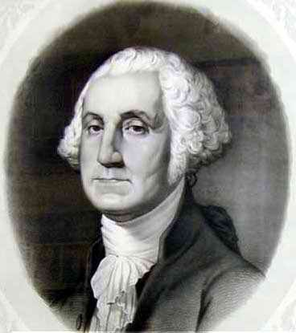

27 GEORGE WASHINGTON 1732-1799
Lahir
tahun 1732 di Wakefield, Virgina, anak petani berada, George
Washington mewarisi sebidang perkebunan yang luas pada umur
dua puluh tujuh tahun. Dari tahun 1753-1758 Washington masuk
dinas tentara, ambil bagian aktif dalam peperangan tentara
Perancis lawan Indian, dan peroleh banyak pengalaman dan
pujian. Dia kembali ke Virginia akhir tahun 1758, dan ambil
pensiun. Tak lama kemudian dia kawin dengan Martha Dandridge
Custis janda kaya beranak dua. (Dia sendiri tak pernah punya
anak).
Washington dalam lima belas tahun berikutnya mengelola
perkebunannya dengan pengelolaan yang rapi. Di tahun 1774,
tatkala dia terpilih jadi wakil Virginia menghadiri Kongres
Kontinental Pertama, dia merupakan orang terkaya di koloni
Amerika. Washington bukanlah orang pertama yang menyerukan
kemerdekaan; tetapi di bulan Juni 1775 dalam Kongres
Kontinental kedua (yang dia juga jadi wakil Virginia), dia
terpilih jadi panglima tentara seluruh Kontinental.
Pengalaman militernya, kekayaannya dan reputasinya, potongan
badannya (tinggi kekar 1,9 m), bakat administratomya dan
--di atas segala-galanya-- pendirian dan watak yang tegas,
menopangnya sehingga dapat menduduki posisi itu. Sepanjang
pertempuran dilakukannya tanpa imbalan uang serta memberi
contoh-contoh pengabdian yang tanpa pamrih.
Keberhasilan Washington yang paling menonjol
dirampungkannya sekitar tahun 1775 tatkala dia memimpin
pasukan Kontinental dan di bulan Maret 1797 tatkala masa
jabatan kepresidenannya yang ke-2 berakhir. Dia
menghembuskan nafas terakhir di rumahnya di Mount Vernon,
Virginia, bulan Desember 1799.
Kedudukan kuncinya yang menentukan dalam rangka
mendirikan negara Amerika Serikat berangkat dari tiga macam
peranan yang dimainkannya.
Pertama, dia merupakan pimpinan militer yang berhasil
dalam perang kemerdekaan Amerika. Memang benar, Washington
bukanlah seorang militer yang genius, tidaklah lebih
menonjol ketimbang Alexander Yang Agung, Yulius Caesar.
Tetapi, perlu diingat, sementara banyak panglima Amerika
menderita kekalahan berat, Washington (meskipun mengalami
juga beberapa kekalahan kecil) masih mampu meneruskan
pertempuran dan membawa panji-panji kemenangan.
Kedua, Washington menjadi ketua konvensi konstitusi.
Kendati ide-ide Washington tidaklah memainkan peranan
menentukan dalam penyusunan konstitusi Amerika, tetapi
dorongannya, nama baiknya, menentukan sekali tatkala
pengesahannya. Saat itu ada tantangan terhadap konstitusi
baru, dan kalau saja tanpa pengaruh Washington rasanya
konstitusi itu sukar diterima.
Ketiga, Washington merupakan presiden pertama Republik
Amerika Serikat. Amerika Serikat sesungguhnya layak merasa
beruntung punya presiden pertama yang punya bobot besar dan
karakter kuat. Coba saja lihat dan bandingkan dengan begitu
banyak contoh negara-negara di Amerika Latin maupun Afrika
yang walaupun didirikan lewat dasar konstitusi demokratis
tetapi teramat cepat merosot jadi diktator militer.
Sedangkan Washington dengan teguhnya memelihara republik
dari perpecahan tanpa diiringi ambisi terus-terusan
berkuasa. Dia tidak sudi jadi raja maupun diktator. Dialah
orang yang menanamkan kaidah perlunya perpindahan kekuasaan
dari satu tangan ke tangan lain lewat cara damai. Kaidah ini
tetap dianut di Amerika Serikat hingga saat ini.
George Washington bukanlah pemikir murni dan tajam
seperti halnya pemuka-pemuka Amerika lain pada jamannya
seperti Thomas Jefferson, James Madison, Alexander Hamilton
dan Benjamin Franklin. Namun, dia lebih unggul dari semua
mereka itu. Soalnya, Washington --baik saat perang maupun
saat damai-- senantiasa memberi sumbangan dalam bentuk
kekuatan watak dalam kepemimpinan pemerintahan, yang tanpa
dia tak bakal ada langkah-langkah politik yang berhasil.
Saham peranan Madison dalam pembentukan Republik Amerika
Serikat adalah penting, tetapi dalam kaitan ini apa yang
dilakukan Washington pun hampir sama penting dan
menentukannya.
Pencantuman George Washington dalam daftar urutan buku
ini sebagian besar tergantung dari penilaian historis
mengenai berdirinya sebuah Republik Amerika Serikat.
Penentuan yang tak berpihak mengenai arti penting berdirinya
Amerika Serikat tentu saja sulit dilakukan oleh seorang
Amerika yang hidup sekarang ini. Kendati Amerika Serikat
dipertengahan abad ke-20 memegang posisi keunggulan militer
dan punya pengaruh politik bahkan lebih besar dari apa yang
pernah dimiliki oleh Kekaisaran Romawi pada saat puncak
kejayaannya, tetapi kekuatan politiknya tidaklah berlangsung
lama seperti halnya Romawi. Sebaliknya, jelas sekali bahwa
beberapa kemajuan teknologi yang dicapai Amerika Serikat
dianggap punya arti besar oleh kebudayaan lain dan pada saat
yang lain. Penemuan pesawat terbang --misalnya-- dan
pendaratan manusia di bulan telah merealisir impian jaman
lampau dan tampaknya tak terbayangkan bahwa penemuan senjata
nuklir dapat terbukti.
Karena George Washington seorang tokoh politik Amerika
yang secara umum dapat dihubungkan dengan Augustus Caesar
dari Romawi, tampaknya layak menempatkan kedudukan
Washington dalam daftar hampir berdekatan dengan Augustus.
Jika Washington diletakkan lebih bawah, ini semata-mata
karena masa kepemimpinannya lebih singkat ketimbang
pemerintahan Augustus, dan karena banyak tokoh (seperti
Thomas Jefferson dan James Madision) juga memainkan peranan
penting dalam pembentukan Republik Amerika Serikat. Tetapi,
kedudukan urutan George Washington lebih tinggi dari
tokoh-tokoh seperti Alexander Yang Agung dan Napoleon karena
hasil karya Washington dan keberhasilan-keberhasilan yang
diperbuatnya begitu punya daya jangkau pengaruh yang lebih
jauh dan lestari.
|